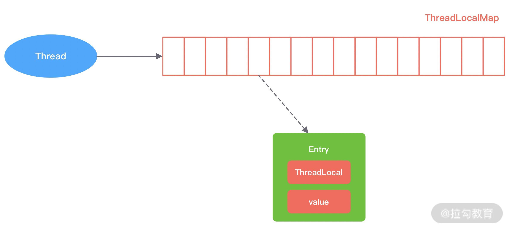
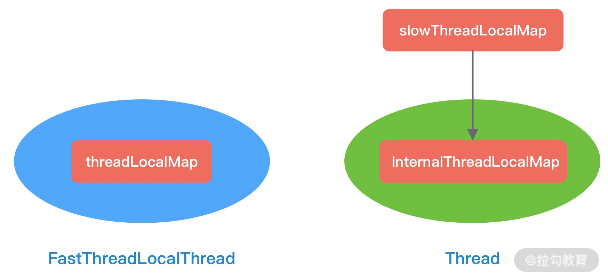

- 00 学好 Netty，是你修炼 Java 内功的必经之路.md.html
- 01 初识 Netty：为什么 Netty 这么流行？.md.html
- 02 纵览全局：把握 Netty 整体架构脉络.md.html
- 03 引导器作用：客户端和服务端启动都要做些什么？.md.html
- 04 事件调度层：为什么 EventLoop 是 Netty 的精髓？.md.html
- 05 服务编排层：Pipeline 如何协调各类 Handler ？.md.html
- 06 粘包拆包问题：如何获取一个完整的网络包？.md.html
- 07 接头暗语：如何利用 Netty 实现自定义协议通信？.md.html
- 08 开箱即用：Netty 支持哪些常用的解码器？.md.html
- 09 数据传输：writeAndFlush 处理流程剖析.md.html
- 10 双刃剑：合理管理 Netty 堆外内存.md.html
- 11 另起炉灶：Netty 数据传输载体 ByteBuf 详解.md.html
- 12 他山之石：高性能内存分配器 jemalloc 基本原理.md.html
- 13 举一反三：Netty 高性能内存管理设计（上）.md.html
- 14 举一反三：Netty 高性能内存管理设计（下）.md.html
- 15 轻量级对象回收站：Recycler 对象池技术解析.md.html
- 16 IO 加速：与众不同的 Netty 零拷贝技术.md.html
- 17 源码篇：从 Linux 出发深入剖析服务端启动流程.md.html
- 18 源码篇：解密 Netty Reactor 线程模型.md.html
- 19 源码篇：一个网络请求在 Netty 中的旅程.md.html
- 20 技巧篇：Netty 的 FastThreadLocal 究竟比 ThreadLocal 快在哪儿？.md.html
- 21 技巧篇：延迟任务处理神器之时间轮 HashedWheelTimer.md.html
- 22 技巧篇：高性能无锁队列 Mpsc Queue.md.html
- 23 架构设计：如何实现一个高性能分布式 RPC 框架.md.html
- 24 服务发布与订阅：搭建生产者和消费者的基础框架.md.html
- 25 远程通信：通信协议设计以及编解码的实现.md.html
- 26 服务治理：服务发现与负载均衡机制的实现.md.html
- 27 动态代理：为用户屏蔽 RPC 调用的底层细节.md.html
- 28 实战总结：RPC 实战总结与进阶延伸.md.html
- 29 编程思想：Netty 中应用了哪些设计模式？.md.html
- 30 实践总结：Netty 在项目开发中的一些最佳实践.md.html
- 31 结束语 技术成长之路：如何打造自己的技术体系.md.html
- 捐赠
20 技巧篇：Netty 的 FastThreadLocal 究竟比 ThreadLocal 快在哪儿？
在前面几篇源码解析的课程中，我们都有在源码中发现 FastThreadLocal 的身影。顾名思义，Netty 作为高性能的网络通信框架，FastThreadLocal 是比 JDK 自身的 ThreadLocal 性能更高的通信框架。FastThreadLocal 到底比 ThreadLocal 快在哪里呢？这节课我们就一起来探索 FastThreadLocal 高性能的奥秘。
说明：本文参考的 Netty 源码版本为 4.1.42.Final。
JDK ThreadLocal 基本原理
JDK ThreadLocal 不仅是高频的面试知识点，而且在日常工作中也是常用一种工具，所以首先我们先学习下 Java 原生的 ThreadLocal 的实现原理，可以帮助我们更好地对比和理解 Netty 的 FastThreadLocal。
如果你需要变量在多线程之间隔离，或者在同线程内的类和方法中共享，那么 ThreadLocal 大显身手的时候就到了。ThreadLocal 可以理解为线程本地变量，它是 Java 并发编程中非常重要的一个类。ThreadLocal 为变量在每个线程中都创建了一个副本，该副本只能被当前线程访问，多线程之间是隔离的，变量不能在多线程之间共享。这样每个线程修改变量副本时，不会对其他线程产生影响。
接下来我们通过一个例子看下 ThreadLocal 如何使用：
public class ThreadLocalTest {
private static final ThreadLocal<String> THREAD_NAME_LOCAL = ThreadLocal.withInitial(() -> Thread.currentThread().getName());
private static final ThreadLocal<TradeOrder> TRADE_THREAD_LOCAL = new ThreadLocal<>();
public static void main(String[] args) {
for (int i = 0; i < 2; i++) {
int tradeId = i;
new Thread(() -> {
TradeOrder tradeOrder = new TradeOrder(tradeId, tradeId % 2 == 0 ? "已支付" : "未支付");
TRADE_THREAD_LOCAL.set(tradeOrder);
System.out.println("threadName: " + THREAD_NAME_LOCAL.get());
System.out.println("tradeOrder info：" + TRADE_THREAD_LOCAL.get());
}, "thread-" + i).start();
}
}
static class TradeOrder {
long id;
String status;
public TradeOrder(int id, String status) {
this.id = id;
this.status = status;
}
@Override
public String toString() {
return "id=" + id + ", status=" + status;
}
}
}
在上述示例中，构造了 THREAD_NAME_LOCAL 和 TRADE_THREAD_LOCAL 两个 ThreadLocal 变量，分别用于记录当前线程名称和订单交易信息。ThreadLocal 是可以支持泛型的，THREAD_NAME_LOCAL 和 TRADE_THREAD_LOCAL 存放 String 类型和 TradeOrder 对象类型的数据，你可以通过 set()/get() 方法设置和读取 ThreadLocal 实例。一起看下示例代码的运行结果：
threadName: thread-0
threadName: thread-1
tradeOrder info：id=1, status=未支付
tradeOrder info：id=0, status=已支付
可以看出 thread-1 和 thread-2 虽然操作的是同一个 ThreadLocal 对象，但是它们取到了不同的线程名称和订单交易信息。那么一个线程内如何存在多个 ThreadLocal 对象，每个 ThreadLocal 对象是如何存储和检索的呢？
接下来我们看看 ThreadLocal 的实现原理。既然多线程访问 ThreadLocal 变量时都会有自己独立的实例副本，那么很容易想到的方案就是在 ThreadLocal 中维护一个 Map，记录线程与实例之间的映射关系。当新增线程和销毁线程时都需要更新 Map 中的映射关系，因为会存在多线程并发修改，所以需要保证 Map 是线程安全的。那么 JDK 的 ThreadLocal 是这么实现的吗？答案是 NO。因为在高并发的场景并发修改 Map 需要加锁，势必会降低性能。JDK 为了避免加锁，采用了相反的设计思路。以 Thread 入手，在 Thread 中维护一个 Map，记录 ThreadLocal 与实例之间的映射关系，这样在同一个线程内，Map 就不需要加锁了。示例代码中线程 Thread 和 ThreadLocal 的关系可以用以下这幅图表示。

那么在 Thread 内部，维护映射关系的 Map 是如何实现的呢？从源码中可以发现 Thread 使用的是 ThreadLocal 的内部类 ThreadLocalMap，所以 Thread、ThreadLocal 和 ThreadLocalMap 之间的关系可以用下图表示：

为了更加深入理解 ThreadLocal，了解 ThreadLocalMap 的内部实现是非常有必要的。ThreadLocalMap 其实与 HashMap 的数据结构类似，但是 ThreadLocalMap 不具备通用性，它是为 ThreadLocal 量身定制的。
ThreadLocalMap 是一种使用线性探测法实现的哈希表，底层采用数组存储数据。如下图所示，ThreadLocalMap 会初始化一个长度为 16 的 Entry 数组，每个 Entry 对象用于保存 key-value 键值对。与 HashMap 不同的是，Entry 的 key 就是 ThreadLocal 对象本身，value 就是用户具体需要存储的值。

当调用 ThreadLocal.set() 添加 Entry 对象时，是如何解决 Hash 冲突的呢？这就需要我们了解线性探测法的实现原理。每个 ThreadLocal 在初始化时都会有一个 Hash 值为 threadLocalHashCode，每增加一个 ThreadLocal， Hash 值就会固定增加一个魔术 HASH_INCREMENT = 0x61c88647。为什么取 0x61c88647 这个魔数呢？实验证明，通过 0x61c88647 累加生成的 threadLocalHashCode 与 2 的幂取模，得到的结果可以较为均匀地分布在长度为 2 的幂大小的数组中。有了 threadLocalHashCode 的基础，下面我们通过下面的表格来具体讲解线性探测法是如何实现的。

为了便于理解，我们采用一组简单的数据模拟 ThreadLocal.set() 的过程是如何解决 Hash 冲突的。
- threadLocalHashCode = 4，threadLocalHashCode & 15 = 4；此时数据应该放在数组下标为 4 的位置。下标 4 的位置正好没有数据，可以存放。
- threadLocalHashCode = 19，threadLocalHashCode & 15 = 4；但是下标 4 的位置已经有数据了，如果当前需要添加的 Entry 与下标 4 位置已存在的 Entry 两者的 key 相同，那么该位置 Entry 的 value 将被覆盖为新的值。我们假设 key 都是不相同的，所以此时需要向后移动一位，下标 5 的位置没有冲突，可以存放。
- threadLocalHashCode = 33，threadLocalHashCode & 15 = 3；下标 3 的位置已经有数据，向后移一位，下标 4 位置还是有数据，继续向后查找，发现下标 6 没有数据，可以存放。
ThreadLocal.get() 的过程也是类似的，也是根据 threadLocalHashCode 的值定位到数组下标，然后判断当前位置 Entry 对象与待查询 Entry 对象的 key 是否相同，如果不同，继续向下查找。由此可见，ThreadLocal.set()/get() 方法在数据密集时很容易出现 Hash 冲突，需要 O(n) 时间复杂度解决冲突问题，效率较低。
下面我们再聊聊 ThreadLocalMap 中 Entry 的设计原理。Entry 继承自弱引用类 WeakReference，Entry 的 key 是弱引用，value 是强引用。在 JVM 垃圾回收时，只要发现了弱引用的对象，不管内存是否充足，都会被回收。那么为什么 Entry 的 key 要设计成弱引用呢？我们试想下，如果 key 都是强引用，当 ThreadLocal 不再使用时，然而 ThreadLocalMap 中还是存在对 ThreadLocal 的强引用，那么 GC 是无法回收的，从而造成内存泄漏。
虽然 Entry 的 key 设计成了弱引用，但是当 ThreadLocal 不再使用被 GC 回收后，ThreadLocalMap 中可能出现 Entry 的 key 为 NULL，那么 Entry 的 value 一直会强引用数据而得不到释放，只能等待线程销毁。那么应该如何避免 ThreadLocalMap 内存泄漏呢？ThreadLocal 已经帮助我们做了一定的保护措施，在执行 ThreadLocal.set()/get() 方法时，ThreadLocal 会清除 ThreadLocalMap 中 key 为 NULL 的 Entry 对象，让它还能够被 GC 回收。除此之外，当线程中某个 ThreadLocal 对象不再使用时，立即调用 remove() 方法删除 Entry 对象。如果是在异常的场景中，记得在 finally 代码块中进行清理，保持良好的编码意识。
关于 JDK 的 ThreadLocal 的基本原理我们已经介绍完了，既然 ThreadLocal 已经非常成熟，而且在日常开发中也被广泛使用，Netty 为什么还要自己实现一个 FastThreadLocal 呢？性能真的比 ThreadLocal 高很多吗？我们接下来一起一探究竟。
FastThreadLocal 为什么快
FastThreadLocal 的实现与 ThreadLocal 非常类似，Netty 为 FastThreadLocal 量身打造了 FastThreadLocalThread 和 InternalThreadLocalMap 两个重要的类。下面我们看下这两个类是如何实现的。
FastThreadLocalThread 是对 Thread 类的一层包装，每个线程对应一个 InternalThreadLocalMap 实例。只有 FastThreadLocal 和 FastThreadLocalThread 组合使用时，才能发挥 FastThreadLocal 的性能优势。首先看下 FastThreadLocalThread 的源码定义：
public class FastThreadLocalThread extends Thread {
private InternalThreadLocalMap threadLocalMap;
// 省略其他代码
}
可以看出 FastThreadLocalThread 主要扩展了 InternalThreadLocalMap 字段，我们可以猜测到 FastThreadLocalThread 主要使用 InternalThreadLocalMap 存储数据，而不再是使用 Thread 中的 ThreadLocalMap。所以想知道 FastThreadLocalThread 高性能的奥秘，必须要了解 InternalThreadLocalMap 的设计原理。
上文中我们讲到了 ThreadLocal 的一个重要缺点，就是 ThreadLocalMap 采用线性探测法解决 Hash 冲突性能较慢，那么 InternalThreadLocalMap 又是如何优化的呢？首先一起看下 InternalThreadLocalMap 的内部构造。
public final class InternalThreadLocalMap extends UnpaddedInternalThreadLocalMap {
private static final int DEFAULT_ARRAY_LIST_INITIAL_CAPACITY = 8;
private static final int STRING_BUILDER_INITIAL_SIZE;
private static final int STRING_BUILDER_MAX_SIZE;
public static final Object UNSET = new Object();
private BitSet cleanerFlags;
private InternalThreadLocalMap() {
super(newIndexedVariableTable());
}
private static Object[] newIndexedVariableTable() {
Object[] array = new Object[32];
Arrays.fill(array, UNSET);
return array;
}
public static int nextVariableIndex() {
int index = nextIndex.getAndIncrement();
if (index < 0) {
nextIndex.decrementAndGet();
throw new IllegalStateException("too many thread-local indexed variables");
}
return index;
}
// 省略其他代码
}
class UnpaddedInternalThreadLocalMap {
static final ThreadLocal<InternalThreadLocalMap> slowThreadLocalMap = new ThreadLocal<InternalThreadLocalMap>();
static final AtomicInteger nextIndex = new AtomicInteger();
Object[] indexedVariables;
UnpaddedInternalThreadLocalMap(Object[] indexedVariables) {
this.indexedVariables = indexedVariables;
}
// 省略其他代码
}
从 InternalThreadLocalMap 内部实现来看，与 ThreadLocalMap 一样都是采用数组的存储方式。但是 InternalThreadLocalMap 并没有使用线性探测法来解决 Hash 冲突，而是在 FastThreadLocal 初始化的时候分配一个数组索引 index，index 的值采用原子类 AtomicInteger 保证顺序递增，通过调用 InternalThreadLocalMap.nextVariableIndex() 方法获得。然后在读写数据的时候通过数组下标 index 直接定位到 FastThreadLocal 的位置，时间复杂度为 O(1)。如果数组下标递增到非常大，那么数组也会比较大，所以 FastThreadLocal 是通过空间换时间的思想提升读写性能。下面通过一幅图描述 InternalThreadLocalMap、index 和 FastThreadLocal 之间的关系。

通过上面 FastThreadLocal 的内部结构图，我们对比下与 ThreadLocal 有哪些区别呢？FastThreadLocal 使用 Object 数组替代了 Entry 数组，Object[0] 存储的是一个Set
假设现在我们有一批数据需要添加到数组中，分别为 value1、value2、value3、value4，对应的 FastThreadLocal 在初始化的时候生成的数组索引分别为 1、2、3、4。如下图所示。

至此，我们已经对 FastThreadLocal 有了一个基本的认识，下面我们结合具体的源码分析 FastThreadLocal 的实现原理。
FastThreadLocal 源码分析
在讲解源码之前，我们回过头看下上文中的 ThreadLocal 示例，如果把示例中 ThreadLocal 替换成 FastThread，应当如何使用呢？
public class FastThreadLocalTest {
private static final FastThreadLocal<String> THREAD_NAME_LOCAL = new FastThreadLocal<>();
private static final FastThreadLocal<TradeOrder> TRADE_THREAD_LOCAL = new FastThreadLocal<>();
public static void main(String[] args) {
for (int i = 0; i < 2; i++) {
int tradeId = i;
String threadName = "thread-" + i;
new FastThreadLocalThread(() -> {
THREAD_NAME_LOCAL.set(threadName);
TradeOrder tradeOrder = new TradeOrder(tradeId, tradeId % 2 == 0 ? "已支付" : "未支付");
TRADE_THREAD_LOCAL.set(tradeOrder);
System.out.println("threadName: " + THREAD_NAME_LOCAL.get());
System.out.println("tradeOrder info：" + TRADE_THREAD_LOCAL.get());
}, threadName).start();
}
}
}
可以看出，FastThreadLocal 的使用方法几乎和 ThreadLocal 保持一致，只需要把代码中 Thread、ThreadLocal 替换为 FastThreadLocalThread 和 FastThreadLocal 即可，Netty 在易用性方面做得相当棒。下面我们重点对示例中用得到 FastThreadLocal.set()/get() 方法做深入分析。
首先看下 FastThreadLocal.set() 的源码：
public final void set(V value) {
if (value != InternalThreadLocalMap.UNSET) { // 1. value 是否为缺省值
InternalThreadLocalMap threadLocalMap = InternalThreadLocalMap.get(); // 2. 获取当前线程的 InternalThreadLocalMap
setKnownNotUnset(threadLocalMap, value); // 3. 将 InternalThreadLocalMap 中数据替换为新的 value
} else {
remove();
}
}
FastThreadLocal.set() 方法虽然入口只有几行代码，但是内部逻辑是相当复杂的。我们首先还是抓住代码主干，一步步进行拆解分析。set() 的过程主要分为三步：
- 判断 value 是否为缺省值，如果等于缺省值，那么直接调用 remove() 方法。这里我们还不知道缺省值和 remove() 之间的联系是什么，我们暂且把 remove() 放在最后分析。
- 如果 value 不等于缺省值，接下来会获取当前线程的 InternalThreadLocalMap。
- 然后将 InternalThreadLocalMap 中对应数据替换为新的 value。
首先我们看下 InternalThreadLocalMap.get() 方法，源码如下：
public static InternalThreadLocalMap get() {
Thread thread = Thread.currentThread();
if (thread instanceof FastThreadLocalThread) { // 当前线程是否为 FastThreadLocalThread 类型
return fastGet((FastThreadLocalThread) thread);
} else {
return slowGet();
}
}
private static InternalThreadLocalMap fastGet(FastThreadLocalThread thread) {
InternalThreadLocalMap threadLocalMap = thread.threadLocalMap(); // 获取 FastThreadLocalThread 的 threadLocalMap 属性
if (threadLocalMap == null) {
thread.setThreadLocalMap(threadLocalMap = new InternalThreadLocalMap());
}
return threadLocalMap;
}
private static InternalThreadLocalMap slowGet() {
ThreadLocal<InternalThreadLocalMap> slowThreadLocalMap = UnpaddedInternalThreadLocalMap.slowThreadLocalMap;
InternalThreadLocalMap ret = slowThreadLocalMap.get(); // 从 JDK 原生 ThreadLocal 中获取 InternalThreadLocalMap
if (ret == null) {
ret = new InternalThreadLocalMap();
slowThreadLocalMap.set(ret);
}
return ret;
}
InternalThreadLocalMap.get() 逻辑很简单，为了帮助你更好地理解，下面使用一幅图描述 InternalThreadLocalMap 的获取方式。

如果当前线程是 FastThreadLocalThread 类型，那么直接通过 fastGet() 方法获取 FastThreadLocalThread 的 threadLocalMap 属性即可。如果此时 InternalThreadLocalMap 不存在，直接创建一个返回。关于 InternalThreadLocalMap 的初始化在上文中已经介绍过，它会初始化一个长度为 32 的 Object 数组，数组中填充着 32 个缺省对象 UNSET 的引用。
那么 slowGet() 又是什么作用呢？从代码分支来看，slowGet() 是针对非 FastThreadLocalThread 类型的线程发起调用时的一种兜底方案。如果当前线程不是 FastThreadLocalThread，内部是没有 InternalThreadLocalMap 属性的，Netty 在 UnpaddedInternalThreadLocalMap 中保存了一个 JDK 原生的 ThreadLocal，ThreadLocal 中存放着 InternalThreadLocalMap，此时获取 InternalThreadLocalMap 就退化成 JDK 原生的 ThreadLocal 获取。
获取 InternalThreadLocalMap 的过程已经讲完了，下面看下 setKnownNotUnset() 如何将数据添加到 InternalThreadLocalMap 的。
private void setKnownNotUnset(InternalThreadLocalMap threadLocalMap, V value) {
if (threadLocalMap.setIndexedVariable(index, value)) { // 1. 找到数组下标 index 位置，设置新的 value
addToVariablesToRemove(threadLocalMap, this); // 2. 将 FastThreadLocal 对象保存到待清理的 Set 中
}
}
setKnownNotUnset() 主要做了两件事：
- 找到数组下标 index 位置，设置新的 value。
- 将 FastThreadLocal 对象保存到待清理的 Set 中。
首先我们看下第一步 threadLocalMap.setIndexedVariable() 的源码实现：
public boolean setIndexedVariable(int index, Object value) {
Object[] lookup = indexedVariables;
if (index < lookup.length) {
Object oldValue = lookup[index];
lookup[index] = value; // 直接将数组 index 位置设置为 value，时间复杂度为 O(1)
return oldValue == UNSET;
} else {
expandIndexedVariableTableAndSet(index, value); // 容量不够，先扩容再设置值
return true;
}
}
indexedVariables 就是 InternalThreadLocalMap 中用于存放数据的数组，如果数组容量大于 FastThreadLocal 的 index 索引，那么直接找到数组下标 index 位置将新 value 设置进去，事件复杂度为 O(1)。在设置新的 value 之前，会将之前 index 位置的元素取出，如果旧的元素还是 UNSET 缺省对象，那么返回成功。
如果数组容量不够了怎么办呢？InternalThreadLocalMap 会自动扩容，然后再设置 value。接下来看看 expandIndexedVariableTableAndSet() 的扩容逻辑：
private void expandIndexedVariableTableAndSet(int index, Object value) {
Object[] oldArray = indexedVariables;
final int oldCapacity = oldArray.length;
int newCapacity = index;
newCapacity |= newCapacity >>> 1;
newCapacity |= newCapacity >>> 2;
newCapacity |= newCapacity >>> 4;
newCapacity |= newCapacity >>> 8;
newCapacity |= newCapacity >>> 16;
newCapacity ++;
Object[] newArray = Arrays.copyOf(oldArray, newCapacity);
Arrays.fill(newArray, oldCapacity, newArray.length, UNSET);
newArray[index] = value;
indexedVariables = newArray;
}
上述代码的位移操作是不是似曾相识？我们去翻阅下 JDK HashMap 中扩容的源码，其中有这么一段代码：
static final int tableSizeFor(int cap) {
int n = cap - 1;
n |= n >>> 1;
n |= n >>> 2;
n |= n >>> 4;
n |= n >>> 8;
n |= n >>> 16;
return (n < 0) ? 1 : (n >= MAXIMUM_CAPACITY) ? MAXIMUM_CAPACITY : n + 1;
}
可以看出 InternalThreadLocalMap 实现数组扩容几乎和 HashMap 完全是一模一样的，所以多读源码还是可以给我们很多启发的。InternalThreadLocalMap 以 index 为基准进行扩容，将数组扩容后的容量向上取整为 2 的次幂。然后将原数组内容拷贝到新的数组中，空余部分填充缺省对象 UNSET，最终把新数组赋值给 indexedVariables。
为什么 InternalThreadLocalMap 以 index 为基准进行扩容，而不是原数组长度呢？假设现在初始化了 70 个 FastThreadLocal，但是这些 FastThreadLocal 从来没有调用过 set() 方法，此时数组还是默认长度 32。当第 index = 70 的 FastThreadLocal 调用 set() 方法时，如果按原数组容量 32 进行扩容 2 倍后，还是无法填充 index = 70 的数据。所以使用 index 为基准进行扩容可以解决这个问题，但是如果 FastThreadLocal 特别多，数组的长度也是非常大的。
回到 setKnownNotUnset() 的主流程，向 InternalThreadLocalMap 添加完数据之后，接下就是将 FastThreadLocal 对象保存到待清理的 Set 中。我们继续看下 addToVariablesToRemove() 是如何实现的。
private static void addToVariablesToRemove(InternalThreadLocalMap threadLocalMap, FastThreadLocal<?> variable) {
Object v = threadLocalMap.indexedVariable(variablesToRemoveIndex); // 获取数组下标为 0 的元素
Set<FastThreadLocal<?>> variablesToRemove;
if (v == InternalThreadLocalMap.UNSET || v == null) {
variablesToRemove = Collections.newSetFromMap(new IdentityHashMap<FastThreadLocal<?>, Boolean>()); // 创建 FastThreadLocal 类型的 Set 集合
threadLocalMap.setIndexedVariable(variablesToRemoveIndex, variablesToRemove); // 将 Set 集合填充到数组下标 0 的位置
} else {
variablesToRemove = (Set<FastThreadLocal<?>>) v; // 如果不是 UNSET，Set 集合已存在，直接强转获得 Set 集合
}
variablesToRemove.add(variable); // 将 FastThreadLocal 添加到 Set 集合中
}
variablesToRemoveIndex 是采用 static final 修饰的变量，在 FastThreadLocal 初始化时 variablesToRemoveIndex 被赋值为 0。InternalThreadLocalMap 首先会找到数组下标为 0 的元素，如果该元素是缺省对象 UNSET 或者不存在，那么会创建一个 FastThreadLocal 类型的 Set 集合，然后把 Set 集合填充到数组下标 0 的位置。如果数组第一个元素不是缺省对象 UNSET，说明 Set 集合已经被填充，直接强转获得 Set 集合即可。这就解释了 InternalThreadLocalMap 的 value 数据为什么是从下标为 1 的位置开始存储了，因为 0 的位置已经被 Set 集合占用了。
为什么 InternalThreadLocalMap 要在数组下标为 0 的位置存放一个 FastThreadLocal 类型的 Set 集合呢？这时候我们回过头看下 remove() 方法。
public final void remove() {
remove(InternalThreadLocalMap.getIfSet());
}
public static InternalThreadLocalMap getIfSet() {
Thread thread = Thread.currentThread();
if (thread instanceof FastThreadLocalThread) {
return ((FastThreadLocalThread) thread).threadLocalMap();
}
return slowThreadLocalMap.get();
}
public final void remove(InternalThreadLocalMap threadLocalMap) {
if (threadLocalMap == null) {
return;
}
Object v = threadLocalMap.removeIndexedVariable(index); // 删除数组下标 index 位置对应的 value
removeFromVariablesToRemove(threadLocalMap, this); // 从数组下标 0 的位置取出 Set 集合，并删除当前 FastThreadLocal
if (v != InternalThreadLocalMap.UNSET) {
try {
onRemoval((V) v); // 空方法，用户可以继承实现
} catch (Exception e) {
PlatformDependent.throwException(e);
}
}
}
在执行 remove 操作之前，会调用 InternalThreadLocalMap.getIfSet() 获取当前 InternalThreadLocalMap。有了之前的基础，理解 getIfSet() 方法就非常简单了，如果是 FastThreadLocalThread 类型，直接取 FastThreadLocalThread 中 threadLocalMap 属性。如果是普通线程 Thread，从 ThreadLocal 类型的 slowThreadLocalMap 中获取。 找到 InternalThreadLocalMap 之后，InternalThreadLocalMap 会从数组中定位到下标 index 位置的元素，并将 index 位置的元素覆盖为缺省对象 UNSET。接下来就需要清理当前的 FastThreadLocal 对象，此时 Set 集合就派上了用场，InternalThreadLocalMap 会取出数组下标 0 位置的 Set 集合，然后删除当前 FastThreadLocal。最后 onRemoval() 方法起到什么作用呢？Netty 只是留了一处扩展，并没有实现，用户需要在删除的时候做一些后置操作，可以继承 FastThreadLocal 实现该方法。
至此，FastThreadLocal.set() 的完成过程已经讲完了，接下来我们继续 FastThreadLocal.get() 方法的实现就易如反掌拉。FastThreadLocal.get() 的源码实现如下：
public final V get() {
InternalThreadLocalMap threadLocalMap = InternalThreadLocalMap.get();
Object v = threadLocalMap.indexedVariable(index); // 从数组中取出 index 位置的元素
if (v != InternalThreadLocalMap.UNSET) {
return (V) v;
}
return initialize(threadLocalMap); // 如果获取到的数组元素是缺省对象，执行初始化操作
}
public Object indexedVariable(int index) {
Object[] lookup = indexedVariables;
return index < lookup.length? lookup[index] : UNSET;
}
private V initialize(InternalThreadLocalMap threadLocalMap) {
V v = null;
try {
v = initialValue();
} catch (Exception e) {
PlatformDependent.throwException(e);
}
threadLocalMap.setIndexedVariable(index, v);
addToVariablesToRemove(threadLocalMap, this);
return v;
}
首先根据当前线程是否是 FastThreadLocalThread 类型找到 InternalThreadLocalMap，然后取出从数组下标 index 的元素，如果 index 位置的元素不是缺省对象 UNSET，说明该位置已经填充过数据，直接取出返回即可。如果 index 位置的元素是缺省对象 UNSET，那么需要执行初始化操作。可以看到，initialize() 方法会调用用户重写的 initialValue 方法构造需要存储的对象数据，如下所示。
private final FastThreadLocal<String> threadLocal = new FastThreadLocal<String>() {
@Override
protected String initialValue() {
return "hello world";
}
};
构造完用户对象数据之后，接下来就会将它填充到数组 index 的位置，然后再把当前 FastThreadLocal 对象保存到待清理的 Set 中。整个过程我们在分析 FastThreadLocal.set() 时都已经介绍过，就不再赘述了。
到此为止，FastThreadLocal 最核心的两个方法 set()/get() 我们已经分析完了。下面有两个问题我们再深入思考下。
- FastThreadLocal 真的一定比 ThreadLocal 快吗？答案是不一定的，只有使用FastThreadLocalThread 类型的线程才会更快，如果是普通线程反而会更慢。
- FastThreadLocal 会浪费很大的空间吗？虽然 FastThreadLocal 采用的空间换时间的思路，但是在 FastThreadLocal 设计之初就认为不会存在特别多的 FastThreadLocal 对象，而且在数据中没有使用的元素只是存放了同一个缺省对象的引用，并不会占用太多内存空间。
总结
本节课我们对比介绍了 ThreadLocal 和 FastThreadLocal，简单总结下 FastThreadLocal 的优势。
- 高效查找。FastThreadLocal 在定位数据的时候可以直接根据数组下标 index 获取，时间复杂度 O(1)。而 JDK 原生的 ThreadLocal 在数据较多时哈希表很容易发生 Hash 冲突，线性探测法在解决 Hash 冲突时需要不停地向下寻找，效率较低。此外，FastThreadLocal 相比 ThreadLocal 数据扩容更加简单高效，FastThreadLocal 以 index 为基准向上取整到 2 的次幂作为扩容后容量，然后把原数据拷贝到新数组。而 ThreadLocal 由于采用的哈希表，所以在扩容后需要再做一轮 rehash。
- 安全性更高。JDK 原生的 ThreadLocal 使用不当可能造成内存泄漏，只能等待线程销毁。在使用线程池的场景下，ThreadLocal 只能通过主动检测的方式防止内存泄漏，从而造成了一定的开销。然而 FastThreadLocal 不仅提供了 remove() 主动清除对象的方法，而且在线程池场景中 Netty 还封装了 FastThreadLocalRunnable，FastThreadLocalRunnable 最后会执行 FastThreadLocal.removeAll() 将 Set 集合中所有 FastThreadLocal 对象都清理掉，
FastThreadLocal 体现了 Netty 在高性能方面精益求精的设计精神，FastThreadLocal 仅仅是其中的冰山一角，下节课我们继续探索 Netty 中其他高效的数据结构技巧。
© 2019 - 2023 Liangliang Lee. Powered by gin and hexo-theme-book.